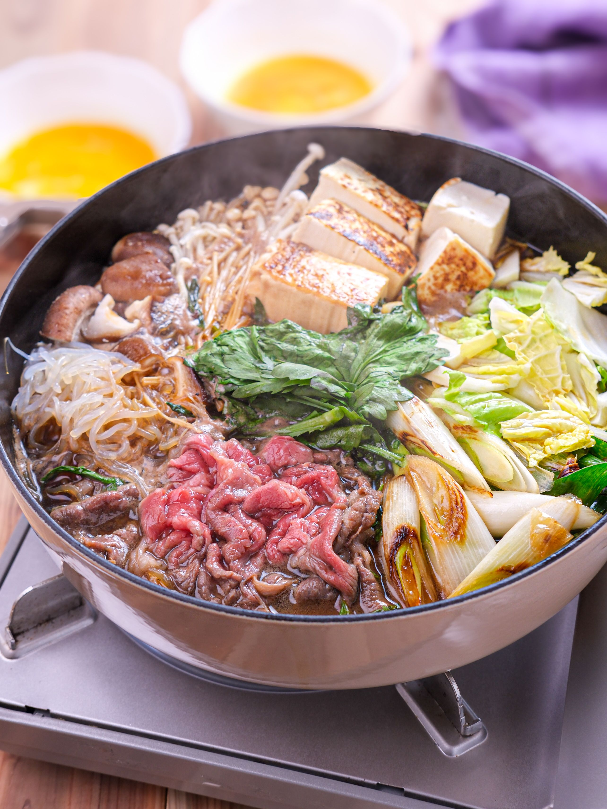
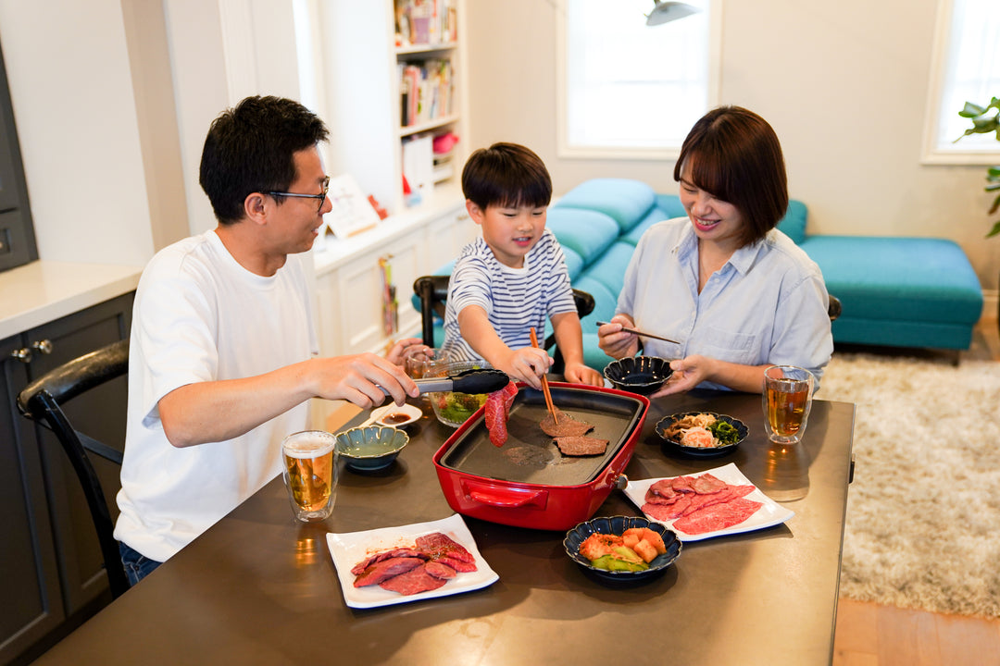

兩套熱源可以分工
- 廚房有三口 IH 系統爐，搭配房內大、小鍋和平底鍋。
- 另有 Panasonic 桌上 IH／Hot Plate 複合機，鍋物盤與平面盤共用同一底座。
- 還有炊飯器、微波爐、冰箱、電熱水壺與咖啡機。
- 刀、砧板、夾子、菜箸、湯勺、鍋鏟、瀝水籃、料理盆及完整餐具。
全程在 Villa 室內用餐。餐桌中央用桌上 IH 煮壽喜燒；廚房三口 IH 先炒菜，再少量煎肉端上桌，搭配雞蛋拌飯與超市小菜。
14:00 離開 Safari → 15:15–16:00 MaxValu → 16:30 左右入住 → 18:00 開始晚餐。9/7 清里回程較長，保留成不用煮飯的彈性晚上。
官方照片確認有兩套不同熱源；但沒有調味料，油、醬汁和鹽都要自己買。
預設 8 人。壽喜燒牛肉約每人 100g，另外煎肉只抓每人約 60g；有飯、麵與多樣配菜，不需要買成兩份主餐。


壽喜燒留在餐桌中央慢慢吃；炒菜先完成，肉只在需要時少量煎。
冷藏肉蛋，確認桌上 IH 鍋物盤、廚房三口 IH、平底鍋與炊飯器。
先煮 5 合飯；洗切壽喜燒食材，雞蛋與泡菜持續冷藏。
廚房平底鍋快炒高麗菜、豆芽與菇類，盛盤後同一鍋留給煎肉。
桌上 IH 煮主鍋；泡菜、小菜與雞蛋拌飯上桌，廚房少量煎肉補盤。
現成醬汁已經調好味；熟食夾與生肉夾分開，雞蛋只在要吃時才離開冰箱。
有小朋友一起吃，食材衛生與室內安全比追求牛肉熟度重要。
生肉夾與入口筷子不要混用。豬肉、雞肉及孩子要吃的肉，以中心 75°C、至少 1 分鐘為安全基準。
採買後直接入住，不把肉留在車上。生蛋若超過賞味期限、蛋殼破裂或曾離開冷藏太久，就改成全熟。
煎肉全程開抽油煙機，窗戶留縫；兩個高功率電器不要共用延長線。孩子不坐在 Hot Plate 與電線旁。
資料整理日期：2026/8/17。設備參考 Rakuten Travel 官方設備照片與客房器具表；醬汁參考 Ebara 壽喜燒醬；小菜參考 Topvalu 國產白菜泡菜與即食茶碗蒸；食品安全參考日本農林水產省。實際庫存以 MaxValu 現場為準；圖片來源：Nadia、Anicrit Store。